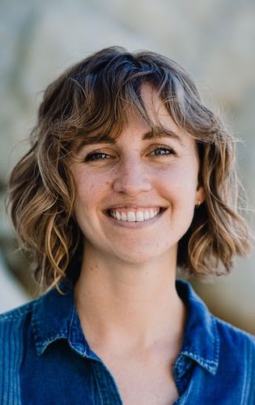
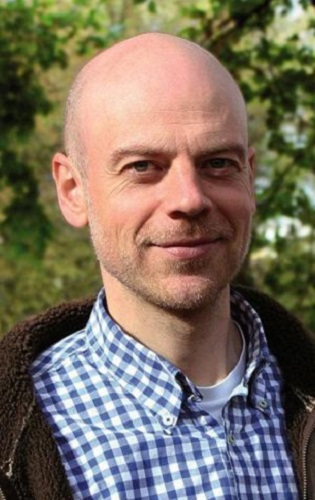
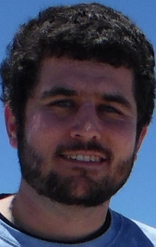
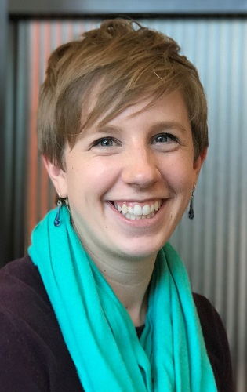
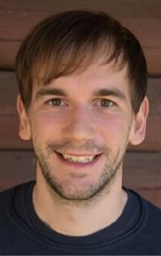

| DAY 1: WEDNESDAY, 14 SEPT 2022, 10:00-12:00 EDT Computational Ecology Today (talks are 20min + 10min questions/discussion, all times are EDT) 10:00 EDT (New York) = 3pm BST (London) = 16:00 CEST (Berlin) | ||
| Time Slot | Title | Presenter |
| 10:00-10:10 | Welcome and Introduction | Tilo Burghardt |
| 10:10-10:40 | Talk and Discussion: Opportunities for AI Applications in Ecology | Hjalmar Kuehl |
| 10:40-11:10 | Talk and Discussion: Open Challenges in Generalizable Computer Vision for Ecology | Sara Beery |
| 11:10-12:00 | Panel Discussion | |
| DAY 2: WEDNESDAY, 21 SEPT 2022, 10:00-12:00 EDT Ecological Data meets AI (talks are 20min + 10min questions/discussion, all times are EDT) 10:00 EDT (New York) = 3pm BST (London) = 16:00 CEST (Berlin) | ||
| Time Slot | Title | Presenter |
| 10:00-10:10 | Welcome Back | Paul Bodesheim |
| 10:10-10:40 | Talk and Discussion: Estimating Animal Abundance using Automatically Derived Observation Distances | Maik Henrich |
| 10:40-11:10 | Talk and Discussion: Zamba: Computer Vision for Wildlife Conservation | Emily Dorne |
| 11:10-12:00 | Panel Discussion | |
| DAY 3: WEDNESDAY, 28 SEPT 2022, 10:00-12:00 EDT Systems, Standards, Community (talks are 20min + 10min questions/discussion, all times are EDT) 10:00 EDT (New York) = 3pm BST (London) = 16:00 CEST (Berlin) | ||
| Time Slot | Title | Presenter |
| 10:00-10:10 | Welcome Back | |
| 10:10-10:40 | Talk and Discussion: Looking at Animals in 3D | Silvia Zuffi |
| 10:40-11:10 | Talk and Discussion: Continuous Learning for Long-term Ecological Monitoring | Paul Bodesheim |
| 11:10-11:40 | Cross-Event Insights: CameraTrapAI at the Cv4Ecology Summer School | Sara Beery, Tiziana Gelmi Candusso, Catherine Marina Breen, Peggy Bevan |
| 11:40-12:00 | Next Steps + Closing Remarks | Tilo Burghardt |
|  |  | |
| Sara Beery | Hjalmar S Kuehl | Silvia Zuffi |
| MIT | Google | iDiv | MPI | IMATI-CNR |
|  |  |  |
| Maik Henrich | Emily Dorne | Paul Bodesheim |
| University of Freiburg | DrivenData | University of Jena |
 |  |  | ||||||
| See University of Bristol Website Terms of Use |